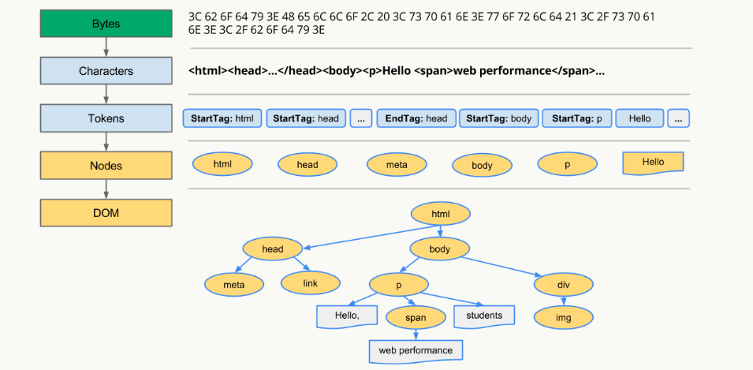

原文连接:https://www.cnblogs.com/duxinyi/p/11576668.html
浏览器与新技术
面试题来源于我的项目「前端面试与进阶指南」
本章关于浏览器原理部分的内容主要来源于浏览器工作原理，这是一篇很长的文章，可以算上一本小书了，有精力的非常建议阅读。
常见的浏览器内核有哪些?
| 浏览器/RunTime | 内核（渲染引擎） | JavaScript 引擎 |
|---|---|---|
| Chrome | Blink（28~） Webkit（Chrome 27） |
V8 |
| FireFox | Gecko | SpiderMonkey |
| Safari | Webkit | JavaScriptCore |
| Edge | EdgeHTML | Chakra(for JavaScript) |
| IE | Trident | Chakra(for JScript) |
| PhantomJS | Webkit | JavaScriptCore |
| Node.js | - | V8 |
浏览器的主要组成部分是什么？
- 用户界面 - 包括地址栏、前进/后退按钮、书签菜单等。除了浏览器主窗口显示的您请求的页面外，其他显示的各个部分都属于用户界面。
- 浏览器引擎 - 在用户界面和呈现引擎之间传送指令。
- 呈现引擎 - 负责显示请求的内容。如果请求的内容是 HTML，它就负责解析 HTML 和 CSS 内容，并将解析后的内容显示在屏幕上。
- 网络 - 用于网络调用，比如 HTTP 请求。其接口与平台无关，并为所有平台提供底层实现。
- 用户界面后端 - 用于绘制基本的窗口小部件，比如组合框和窗口。其公开了与平台无关的通用接口，而在底层使用操作系统的用户界面方法。
- JavaScript 解释器。用于解析和执行 JavaScript 代码。
- 数据存储。这是持久层。浏览器需要在硬盘上保存各种数据，例如 Cookie。新的 HTML 规范 (HTML5) 定义了“网络数据库”，这是一个完整（但是轻便）的浏览器内数据库。

图：浏览器的主要组件。
值得注意的是，和大多数浏览器不同，Chrome 浏览器的每个标签页都分别对应一个呈现引擎实例。每个标签页都是一个独立的进程。
浏览器是如何渲染UI的？
- 浏览器获取HTML文件，然后对文件进行解析，形成DOM Tree
- 与此同时，进行CSS解析，生成Style Rules
- 接着将DOM Tree与Style Rules合成为 Render Tree
- 接着进入布局（Layout）阶段，也就是为每个节点分配一个应出现在屏幕上的确切坐标
- 随后调用GPU进行绘制（Paint），遍历Render Tree的节点，并将元素呈现出来
浏览器如何解析css选择器？
浏览器会『从右往左』解析CSS选择器。
我们知道DOM Tree与Style Rules合成为 Render Tree，实际上是需要将Style Rules附着到DOM Tree上，因此需要根据选择器提供的信息对DOM Tree进行遍历，才能将样式附着到对应的DOM元素上。
以下这段css为例
.mod-nav h3 span {font-size: 16px;}我们对应的DOM Tree 如下
若从左向右的匹配，过程是：
- 从 .mod-nav 开始，遍历子节点 header 和子节点 div
- 然后各自向子节点遍历。在右侧 div 的分支中
- 最后遍历到叶子节点 a ，发现不符合规则，需要回溯到 ul 节点，再遍历下一个 li-a，一颗DOM树的节点动不动上千，这种效率很低。
如果从右至左的匹配：
- 先找到所有的最右节点 span，对于每一个 span，向上寻找节点 h3
- 由 h3再向上寻找 class=mod-nav 的节点
- 最后找到根元素 html 则结束这个分支的遍历。
后者匹配性能更好，是因为从右向左的匹配在第一步就筛选掉了大量的不符合条件的最右节点（叶子节点）；而从左向右的匹配规则的性能都浪费在了失败的查找上面。
DOM Tree是如何构建的？
- 转码: 浏览器将接收到的二进制数据按照指定编码格式转化为HTML字符串
- 生成Tokens: 之后开始parser，浏览器会将HTML字符串解析成Tokens
- 构建Nodes: 对Node添加特定的属性，通过指针确定 Node 的父、子、兄弟关系和所属 treeScope
- 生成DOM Tree: 通过node包含的指针确定的关系构建出DOM
Tree

浏览器重绘与重排的区别？
- 重排: 部分渲染树（或者整个渲染树）需要重新分析并且节点尺寸需要重新计算，表现为重新生成布局，重新排列元素
- 重绘: 由于节点的几何属性发生改变或者由于样式发生改变，例如改变元素背景色时，屏幕上的部分内容需要更新，表现为某些元素的外观被改变
单单改变元素的外观，肯定不会引起网页重新生成布局，但当浏览器完成重排之后，将会重新绘制受到此次重排影响的部分
重排和重绘代价是高昂的，它们会破坏用户体验，并且让UI展示非常迟缓，而相比之下重排的性能影响更大，在两者无法避免的情况下，一般我们宁可选择代价更小的重绘。
『重绘』不一定会出现『重排』，『重排』必然会出现『重绘』。
如何触发重排和重绘？
任何改变用来构建渲染树的信息都会导致一次重排或重绘：
- 添加、删除、更新DOM节点
- 通过display: none隐藏一个DOM节点-触发重排和重绘
- 通过visibility: hidden隐藏一个DOM节点-只触发重绘，因为没有几何变化
- 移动或者给页面中的DOM节点添加动画
- 添加一个样式表，调整样式属性
- 用户行为，例如调整窗口大小，改变字号，或者滚动。
如何避免重绘或者重排？
集中改变样式
我们往往通过改变class的方式来集中改变样式
// 判断是否是黑色系样式
const theme = isDark ? 'dark' : 'light'
// 根据判断来设置不同的class
ele.setAttribute('className', theme)使用DocumentFragment
我们可以通过createDocumentFragment创建一个游离于DOM树之外的节点，然后在此节点上批量操作，最后插入DOM树中，因此只触发一次重排
var fragment = document.createDocumentFragment();
for (let i = 0;i<10;i++){
let node = document.createElement("p");
node.innerHTML = i;
fragment.appendChild(node);
}
document.body.appendChild(fragment);提升为合成层
将元素提升为合成层有以下优点：
- 合成层的位图，会交由 GPU 合成，比 CPU 处理要快
- 当需要 repaint 时，只需要 repaint 本身，不会影响到其他的层
- 对于 transform 和 opacity 效果，不会触发 layout 和 paint
提升合成层的最好方式是使用 CSS 的 will-change 属性：
#target {
will-change: transform;
}关于合成层的详解请移步无线性能优化：Composite
前端如何实现即时通讯？
短轮询
短轮询的原理很简单，每隔一段时间客户端就发出一个请求，去获取服务器最新的数据，一定程度上模拟实现了即时通讯。
- 优点：兼容性强，实现非常简单
- 缺点：延迟性高，非常消耗请求资源，影响性能
comet
comet有两种主要实现手段，一种是基于 AJAX 的长轮询（long-polling）方式，另一种是基于 Iframe 及 htmlfile 的流（streaming）方式，通常被叫做长连接。
具体两种手段的操作方法请移步Comet技术详解：基于HTTP长连接的Web端实时通信技术
长轮询优缺点：
- 优点：兼容性好，资源浪费较小
- 缺点：服务器hold连接会消耗资源，返回数据顺序无保证，难于管理维护
长连接优缺点：
- 优点：兼容性好，消息即时到达，不发无用请求
- 缺点：服务器维护长连接消耗资源
SSE
使用指南请看Server-Sent Events 教程
SSE（Server-Sent Event，服务端推送事件）是一种允许服务端向客户端推送新数据的HTML5技术。
- 优点：基于HTTP而生，因此不需要太多改造就能使用，使用方便，而websocket非常复杂，必须借助成熟的库或框架
- 缺点：基于文本传输效率没有websocket高，不是严格的双向通信，客户端向服务端发送请求无法复用之前的连接，需要重新发出独立的请求

Websocket
使用指南请看WebSocket 教程
Websocket是一个全新的、独立的协议，基于TCP协议，与http协议兼容、却不会融入http协议，仅仅作为html5的一部分，其作用就是在服务器和客户端之间建立实时的双向通信。
- 优点：真正意义上的实时双向通信，性能好，低延迟
- 缺点：独立与http的协议，因此需要额外的项目改造，使用复杂度高，必须引入成熟的库，无法兼容低版本浏览器

Web Worker
后面性能优化部分会用到，先做了解
Web Worker 的作用，就是为 JavaScript 创造多线程环境，允许主线程创建 Worker 线程，将一些任务分配给后者运行
Service workers
后面性能优化部分会用到，先做了解
Service workers 本质上充当Web应用程序与浏览器之间的代理服务器，也可以在网络可用时作为浏览器和网络间的代理，创建有效的离线体验。
什么是浏览器同源策略？
同源策略限制了从同一个源加载的文档或脚本如何与来自另一个源的资源进行交互。这是一个用于隔离潜在恶意文件的重要安全机制。
同源是指"协议+域名+端口"三者相同，即便两个不同的域名指向同一个ip地址，也非同源。
下表给出了相对http://store.company.com/dir/page.html同源检测的示例:
浏览器中的大部分内容都是受同源策略限制的，但是以下三个标签可以不受限制：
<img src=XXX><link href=XXX><script src=XXX>
如何实现跨域？
跨域是个比较古老的命题了，历史上跨域的实现手段有很多，我们现在主要介绍三种比较主流的跨域方案，其余的方案我们就不深入讨论了，因为使用场景很少，也没必要记这么多奇技淫巧。
最经典的跨域方案jsonp
jsonp本质上是一个Hack，它利用<script>标签不受同源策略限制的特性进行跨域操作。
jsonp优点：
- 实现简单
- 兼容性非常好
jsonp的缺点：
- 只支持get请求（因为
<script>标签只能get） - 有安全性问题，容易遭受xss攻击
- 需要服务端配合jsonp进行一定程度的改造
jsonp的实现：
function JSONP({
url,
params,
callbackKey,
callback
}) {
// 在参数里制定 callback 的名字
params = params || {}
params[callbackKey] = 'jsonpCallback'
// 预留 callback
window.jsonpCallback = callback
// 拼接参数字符串
const paramKeys = Object.keys(params)
const paramString = paramKeys
.map(key => `${key}=${params[key]}`)
.join('&')
// 插入 DOM 元素
const script = document.createElement('script')
script.setAttribute('src', `${url}?${paramString}`)
document.body.appendChild(script)
}
JSONP({
url: 'http://s.weibo.com/ajax/jsonp/suggestion',
params: {
key: 'test',
},
callbackKey: '_cb',
callback(result) {
console.log(result.data)
}
})最流行的跨域方案cors
cors是目前主流的跨域解决方案，跨域资源共享(CORS) 是一种机制，它使用额外的 HTTP 头来告诉浏览器 让运行在一个 origin (domain) 上的Web应用被准许访问来自不同源服务器上的指定的资源。当一个资源从与该资源本身所在的服务器不同的域、协议或端口请求一个资源时，资源会发起一个跨域 HTTP 请求。
如果你用express，可以这样在后端设置
//CORS middleware
var allowCrossDomain = function(req, res, next) {
res.header('Access-Control-Allow-Origin', 'http://example.com');
res.header('Access-Control-Allow-Methods', 'GET,PUT,POST,DELETE');
res.header('Access-Control-Allow-Headers', 'Content-Type');
next();
}
//...
app.configure(function() {
app.use(express.bodyParser());
app.use(express.cookieParser());
app.use(express.session({ secret: 'cool beans' }));
app.use(express.methodOverride());
app.use(allowCrossDomain);
app.use(app.router);
app.use(express.static(__dirname + '/public'));
});
在生产环境中建议用成熟的开源中间件解决问题。
最方便的跨域方案Nginx
nginx是一款极其强大的web服务器，其优点就是轻量级、启动快、高并发。
现在的新项目中nginx几乎是首选，我们用node或者java开发的服务通常都需要经过nginx的反向代理。

反向代理的原理很简单，即所有客户端的请求都必须先经过nginx的处理，nginx作为代理服务器再讲请求转发给node或者java服务，这样就规避了同源策略。
#进程, 可更具cpu数量调整
worker_processes 1;
events {
#连接数
worker_connections 1024;
}
http {
include mime.types;
default_type application/octet-stream;
sendfile on;
#连接超时时间，服务器会在这个时间过后关闭连接。
keepalive_timeout 10;
# gizp压缩
gzip on;
# 直接请求nginx也是会报跨域错误的这里设置允许跨域
# 如果代理地址已经允许跨域则不需要这些, 否则报错(虽然这样nginx跨域就没意义了)
add_header Access-Control-Allow-Origin *;
add_header Access-Control-Allow-Headers X-Requested-With;
add_header Access-Control-Allow-Methods GET,POST,OPTIONS;
# srever模块配置是http模块中的一个子模块，用来定义一个虚拟访问主机
server {
listen 80;
server_name localhost;
# 根路径指到index.html
location / {
root html;
index index.html index.htm;
}
# localhost/api 的请求会被转发到192.168.0.103:8080
location /api {
rewrite ^/b/(.*)$ /$1 break; # 去除本地接口/api前缀, 否则会出现404
proxy_set_header Host $host;
proxy_set_header X-Real-IP $remote_addr;
proxy_set_header X-Forwarded-For $proxy_add_x_forwarded_for;
proxy_pass http://192.168.0.103:8080; # 转发地址
}
# 重定向错误页面到/50x.html
error_page 500 502 503 504 /50x.html;
location = /50x.html {
root html;
}
}
}其它跨域方案
- HTML5 XMLHttpRequest 有一个API，postMessage()方法允许来自不同源的脚本采用异步方式进行有限的通信，可以实现跨文本档、多窗口、跨域消息传递。
- WebSocket 是一种双向通信协议，在建立连接之后，WebSocket 的 server 与 client 都能主动向对方发送或接收数据，连接建立好了之后 client 与 server 之间的双向通信就与 HTTP 无关了，因此可以跨域。
- window.name + iframe：window.name属性值在不同的页面（甚至不同域名）加载后依旧存在，并且可以支持非常长的 name 值，我们可以利用这个特点进行跨域。
- location.hash + iframe：a.html欲与c.html跨域相互通信，通过中间页b.html来实现。 三个页面，不同域之间利用iframe的location.hash传值，相同域之间直接js访问来通信。
- document.domain + iframe： 该方式只能用于二级域名相同的情况下，比如 a.test.com 和 b.test.com 适用于该方式，我们只需要给页面添加 document.domain ='test.com' 表示二级域名都相同就可以实现跨域，两个页面都通过js强制设置document.domain为基础主域，就实现了同域。
其余方案来源于九种跨域方式
参考文章:
公众号
想要实时关注笔者最新的文章和最新的文档更新请关注公众号程序员面试官,后续的文章会优先在公众号更新.
简历模板: 关注公众号回复「模板」获取
《前端面试手册》: 配套于本指南的突击手册,关注公众号回复「fed」获取